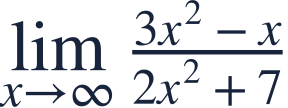
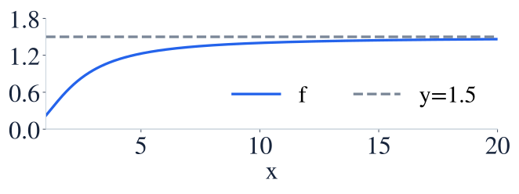
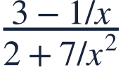
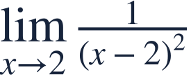

Infinite limits and limits at infinity
무한극한과 무한대극한

A point going to infinity differs from an input going to infinity.
함숫값이 무한히 커지는 것과 입력이 무한히 커지는 것은 다릅니다.

A point going to infinity differs from an input going to infinity.
함숫값이 무한히 커지는 것과 입력이 무한히 커지는 것은 다릅니다.
Identify what approaches infinity before choosing a method.
무엇이 무한대로 가는지 먼저 확인하세요.

For end behavior of a rational function, compare the highest-degree terms.
유리함수의 먼 곳 거동은 최고차항을 비교해 읽습니다.

Divide numerator and denominator by x².
분자와 분모를 x²으로 나눕니다.
Lower-order contributions disappear as the input grows.
입력이 커지면 낮은 차수의 기여가 사라집니다.
The graph approaches horizontal height 1.5.
그래프가 수평 높이 1.5에 가까워집니다.
A vertical asymptote describes behavior near a finite input, not far-away input behavior.
수직점근선은 한 입력 근처의 거동입니다. 먼 곳의 거동과 구별하세요.

Check the denominator sign from both sides.
양쪽에서 분모의 부호를 확인하세요.